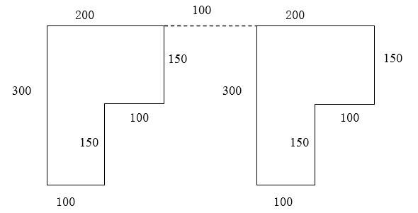

1、程序名是用以识别存入控制器内存中的程序，在同一个目录下不能出现包含两个或更多拥有相同程序名的程序。程序名由字母、________、________组成长度不超过________个字符。
1、在执行以下程序过程中，工业机器人将调用几次abc子程序（ ）。
R[1]=1
LBL [1]
IF R[1]>4 JMP LBL[2]
CALL abc
R[1]= R[1]+1
JMP LBL[1]
2、由P[1]点开始沿着过P[2]点的圆弧以2000mm/sec的速度运动至P[3]点的程序为（ ）。
3、器人末端执行器的位置和姿态简称为位姿。在空间坐标系中，位置是和姿态分别是由（ ）旋转自由度确定。
4、机器人运动的进给速度，由程序指令直接指定，直线运动指令的进给速度的单位可以为（ ）。
5、标签指令LBL用于指定程序执行的分支跳转的目标。标签指令一经执行，对于（ ）是适用的。
6、下列关于HSR-612工业机器人工具坐标系描述错误的是（ ）。
7、位置寄存器轴指令在位置寄存器上完成计算操作。PR[i, j]中的元素 i 和J分别代表（ ）。
8、工业机器人一般有四个坐标系，下列不属于机器人坐标系的是（ ）。
9、下列关于机器人安全操作描述正确的是（ ）。
10、设置工业机器人参考点时，在手动模式下控制机器人各关节轴移动至标准零点姿态，然后在校准界面中输入各关节轴的零点值，下列数值为正确的零点值的是（ ）。
